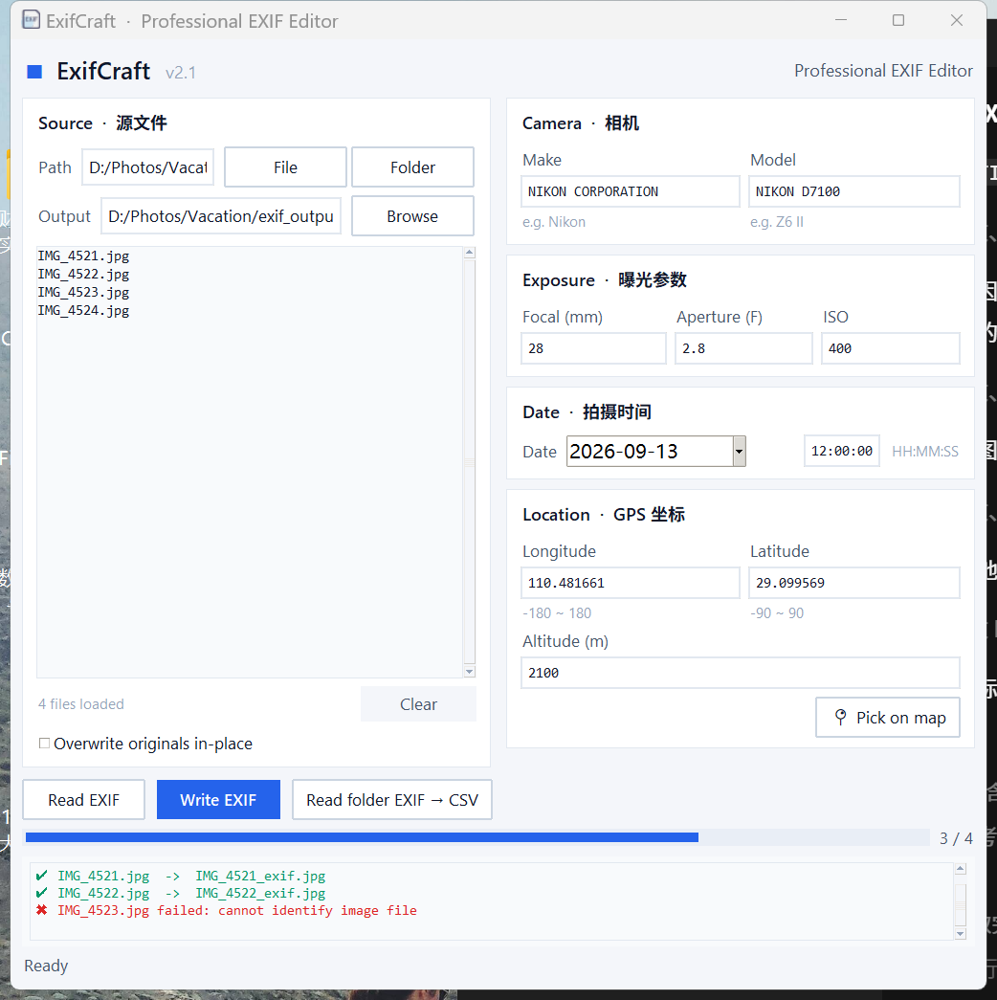

纯 Python 桌面应用，基于 Tkinter 构建。批量读写 GPS 坐标、相机信息、曝光参数与拍摄时间，支持地图选点与 CSV 导出。

单文件应用，开箱即用
将 GPS 坐标（经度 / 纬度 / 海拔）、相机制造商与型号、焦距、光圈、ISO、拍摄时间写入 JPEG / TIFF / PNG 等格式图片。
选中列表中的文件，一键回填所有字段到表单，方便查看与修改现有元数据。
支持单文件或整个文件夹，后台线程处理不阻塞界面，实时进度条一目了然。
集成 tkintermapview，在地图上点击即可拾取 GPS 坐标，无需手动查经纬度。
一键将文件夹内所有图片的 EXIF 摘要导出为 CSV 表格，便于整理与归档。
默认输出 *_exif 副本不修改原图；也可勾选原地覆盖，由你决定。
浅色卡片式界面，跨平台 ttk 主题，Windows 下自动启用 HiDPI 适配。
经纬度范围、数值格式、日期格式全部前端校验，错误信息清晰直观。
集成 tkcalendar 日历控件，拍摄日期点选即得，告别手动输入格式。
Python 3.10+ 即可运行
三步完成 EXIF 写入
选择图片 — 点击 File 选择单张图片，或点击 Folder 选择整个文件夹，自动扫描其中的图片。
填写参数 — 相机信息（如 Nikon Z6 II）、曝光参数、拍摄时间与 GPS 坐标；也可先点击 Read EXIF 读取现有元数据回填表单。
写入 — 点击 Write EXIF。默认生成 <原文件名>_exif 副本（JPEG 以 quality=100 保存），勾选 Overwrite 可原地覆盖。